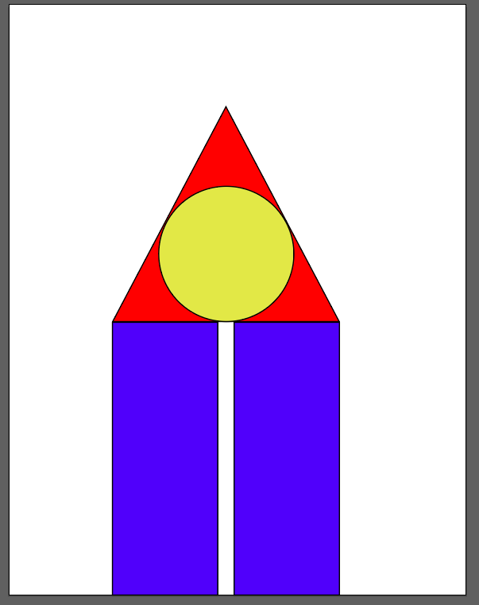

1. Open XD and make a file with a width of 1440px and a height of 500px.
2. Draw a vertical rectangle with a width of 49px and a height of 225px, color fill of #2D08F7.
3. The rectangle should touch the bottom of the art board, but be 580px away from the left of the art board.
4. Copy the rectangle
5. Move the new rectangle 183px to the right.
6. Draw a triangle with a fill color of #FA0303.
7. The triangle should sit on top of both rectangles.
8. bottom two corners of the triangle, should match the top corners facing outwards of the rectangles.
9. Make, a circle with a width of 170px and a height of 170px, color fill of #E6E153.
10. Place the circle in the center of the triangle.
11. Finally save the file as a PNG.
Original
Instructed
